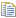
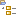
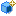

The Model view¶
The Model view
Key :
- 1. Model explorer tab.
- 2. Local work model.
- 3. Model elements.
- 4. Deployed model component (local library)
Main Model explorer commands¶
From the explorer contextual menu:
- Create a diagram [
 – Create diagram] : Creates the diagram of your choice under the selected element.
– Create diagram] : Creates the diagram of your choice under the selected element.
- Create an element [ – Create element] : Creates the element of your choice under the selected element.
- Add stereotype(s) on an element [
 – Add stereotype(s)…] : Adds one or several stereotypes to the selected element.
– Add stereotype(s)…] : Adds one or several stereotypes to the selected element.
- Create a stereotype [ – Create stereotype…] : Creates a new stereotype (see Basic level – Creating a stereotype for more details).
- Rename an element [
 – Rename / F2 key] : Renames the selected element.
– Rename / F2 key] : Renames the selected element.
- Delete an element [
 – Delete element / Del key] : Deletes the selected element.
– Delete element / Del key] : Deletes the selected element.
- Cut an element [ – Cut element / Ctrl+X key] : Cuts the selected element.
- Copy an element [ – Copy element / Ctrl+C key] : Copies the selected element.
- Paste an element [
 – Paste element / Ctrl+V key] : Pastes the copied element.
– Paste element / Ctrl+V key] : Pastes the copied element.
- Check model consistency [ – Check model] : Checks model consistency recursively from the selected element.
- Open new explorer [] Opens a new explorer whose root element is the selected element.
- Create/edit/package a Model component [ – Model Components] : Creates, edits or packages a Model Component (see Developing and packaging model components for more details)…
- Launch an XMI Import/Export [ – XMI] : Launches an XMI Import/Export recursively from the selected element (see Modelio XMI Import/Export for more details)…
- Create/Update automatic diagrams [] : Creates or updates automatic diagrams (see Automatic diagrams for more details)…
- Import a model [] : Launches a model import (see Importing elements from existing projects for more details)…
From the explorer toolbar:
- Collapse all [
 ] : Collapses all elements and shows only the root package.
] : Collapses all elements and shows only the root package.
- Skip back [] : Skips back through the history of the elements you have selected.
- Skip forward [
 ] : Skips forward through the history of the elements you have selected.
] : Skips forward through the history of the elements you have selected.
- Open new explorer [] : Opens a new explorer whose root element is the selected element.
- Create sibling element [] : Creates a sibling element of the selected element. Sibling elements are elements of the same type as the selected element and at the same level in the model hierarchy.
- Create clone [] : Creates a clone of the selected element. Clones are exact copies of their origin elements. They have the same properties and the same contents.
- Move up [] : Moves the selected element up in the model structure.
- Move down [] : Moves the selected element down in the model structure.
- Select as root [] : Displays only the selected element and its contents. Click again to switch back to the classic view.
Note: For more information, see “Creating elements using the context menu commands”.